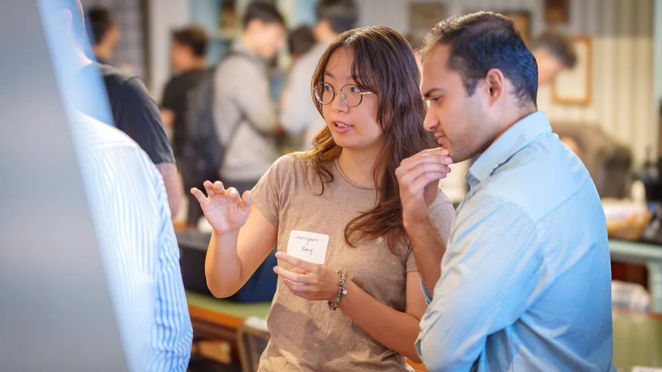
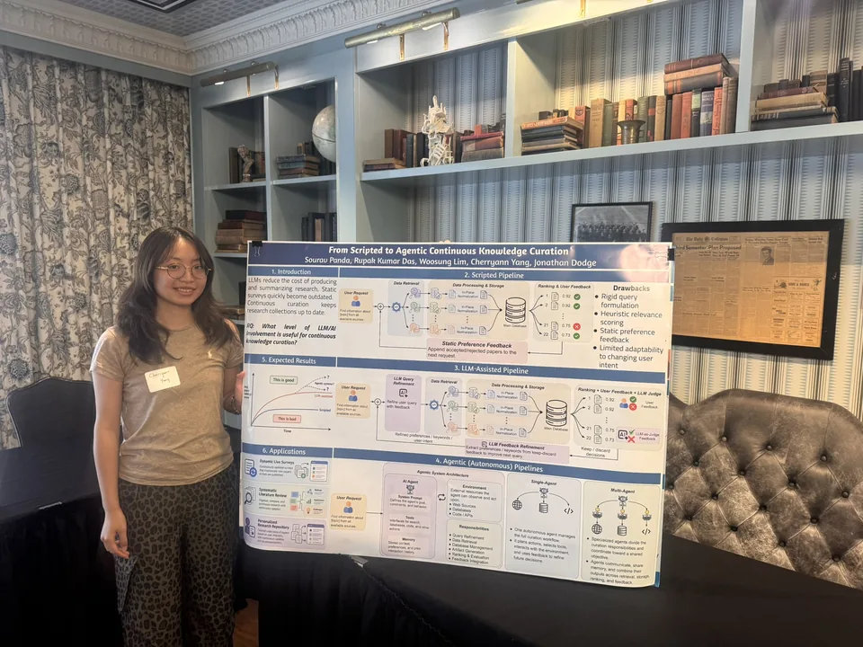

AI in Research Symposium


First photo: Penn State College of IST
Presented our poster, From Scripted to Agentic Continuous Knowledge Curation, at the College of IST’s first AI in Research Symposium. It asks how much AI involvement is actually useful when you’re trying to keep a research collection up to date.
I co-developed the scripted and LLM-assisted pipelines, the baseline for the agentic versions we’re building now. I was one of the only undergrads in the room, and I learned a lot.